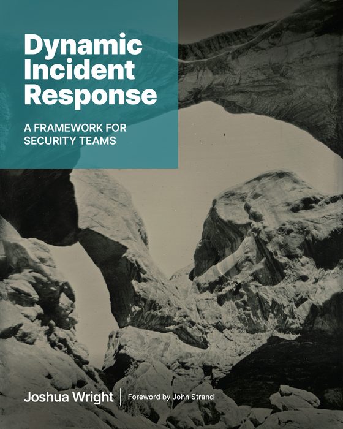

Dynamic Incident Response
A Framework for Security Teams
A practical guide to building and running incident response programs that adapt to modern threats. From preparation through recovery, this book gives security teams, SOC analysts, and DFIR practitioners the framework they need to detect, contain, and eradicate threats effectively. Read the complete book online for free.
About the Book
Incident response is not a checklist. It is a dynamic process that demands adaptability, sound judgment, and a deep understanding of both the technical and organizational dimensions of security events.
Dynamic Incident Response introduces the Dynamic Approach to Incident Response (DAIR), a framework that covers the full incident response lifecycle: preparation, detection and identification, verification and triage, scoping, containment, eradication, recovery, and post-incident debrief. Each chapter pairs foundational concepts with practical techniques drawn from real-world incidents, giving analysts and response teams the tools to act decisively under pressure.
Topics include ransomware response and recovery, cloud incident response for AWS and Azure, OT/ICS incident handling, cyber threat intelligence integration, digital forensics and memory analysis, incident response playbook development, and the emerging role of AI in security operations. Foreword by John Strand.
What's Inside
Incident Response Framework
The Dynamic Approach to Incident Response (DAIR) provides a structured yet adaptive model that moves beyond rigid, linear processes. Built on the OODA loop and aligned with NIST CSF 2.0.
Detection and Threat Hunting
Signature-based, behavioral, and AI-driven detection methods. Sigma rules, SIEM correlation, endpoint detection and response (EDR), and network traffic analysis for identifying threats early.
Incident Response Playbooks
Step-by-step checklists for every phase of the incident response lifecycle, from initial detection through recovery. Designed as practical references for active incidents.
Ransomware Response
Comprehensive guidance for ransomware incidents: containment strategies, negotiation considerations, recovery planning, decryption options, and lessons from real-world attacks including NotPetya, LockBit, and Scattered Spider.
Cloud Incident Response
Cloud-specific IR techniques for AWS, Azure, and GCP. Evidence preservation with EBS snapshots, CloudTrail and Azure Monitor log analysis, IAM investigation, and Kubernetes security events.
Digital Forensics and Investigation
Memory forensics with Volatility and MemProcFS, Windows event log analysis with Hayabusa, disk forensics, malware analysis, lateral movement detection, and root cause analysis techniques.
OT/ICS Security
Incident response for operational technology and industrial control systems. Purdue model segmentation, safety instrumented systems, and bridging the IT-OT gap during incidents.
AI in Incident Response
Practical applications of AI for log analysis, threat detection, playbook generation, report writing, and agentic investigation workflows using large language models.
Free Incident Response Resources
Step-by-Step Checklists
Standalone incident response checklists for each phase of the lifecycle, available in PDF and Markdown. Print them for your IR go-bag or war room.
View ChecklistsRead Online
Read the complete incident response book in your browser, with full-resolution figures and diagrams.
Open BookAbout the Author
Joshua Wright is a senior instructor and author at the SANS Institute, where he teaches courses on incident response, threat hunting, and penetration testing. He is a senior technical director at Counter Hack, and the author of multiple SANS courses and industry publications.